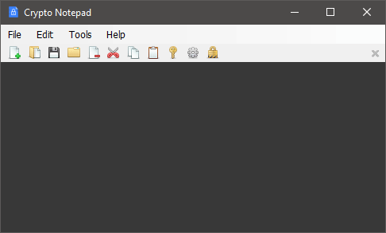

It is often necessary to protect important notes in order to prevent them from being accessed by others, but text editors that offer encryption features are sometimes too complex for users who just want a secure Notepad alternative. Crypto Notepad stands out through its relatively simple design, as it looks very similar to the standard Windows Notepad. It offers a few extra features, such as encryption and a customizable UI, but it remains lightweight and very easy to use.
Crypto Notepad allows you to create secure notes using AES algorithms, able to customize different parameters of the encryption, such as: hash algorithm, key size, password iterations.
Crypto Notepad, besides the main features of the default Windows Notepad, also supports drag and drop, url detection, associate own file type with application, integrate with windows context menu.
Crypto Notepad is an open source project. It will always remain free and ad-free. If you're asked to pay for "full version" or "ad removal", most probably it's a scam.
Crypto Notepad can be run from any location without being installed on your PC beforehand. For example, you can place it on a portable storage device and use it to create secure notes on the go.